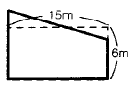
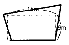
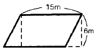
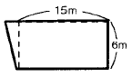

위험물기능사 (2001-10-14 기출문제)
1과목: 화재 예방과 소화방법
1. 할로겐화물 소화기의 사용금지 장소가 아닌 곳은?
- 무창층
- 지하층
- 사무실의 바닥면적이 20m2 미만인 곳
- 배기를 위한 유효한 개구부가 있는 곳
(정답률: 65%)

2. 위험물 성질에서 틀린 것은?
- 황린은 인의 단체이다
- 적린은 인의 단체이다
- 황은 황의 단체이다
- 황화린은 인의 단체이다
(정답률: 50%)
3. 제5류 위험물인 셀룰로이드의 성질을 설명한 것 중 옳지 않은 것은?
- 공기와의 접촉시 열분해가 진행되어 자연발화가 용이하다.
- 가열하면 145℃ 부근에서 백연을 발생하고 발화한다.
- 불에 닿으면 바로 착화되나 물에 쉽게 용해되므로 유독가스는 발생되지 않는다.
- 질화도가 낮은 니트로셀룰로오스에 장뇌와 알콜을 녹여 교질 상태로 만든다.
(정답률: 66%)
4. B급 화재시 물의 사용을 금지하는 이유는?
- 화재면이 확대된다.
- 유독가스가 발생한다.
- 착화온도가 낮아진다.
- 폭발의 위험성이 증가한다.
(정답률: 74%)
5. 벤젠의 일반 성질에서 틀린 것은?
- 증기는 유독하다.
- 인화점은 휘발유 보다 낮다.
- 에테르에 잘 녹는다.
- 물에는 거의 녹지 않는다.
(정답률: 48%)
6. 다음중 과산화수소에 대한 설명으로서 틀린 것은?
- 순수한 것은 무색액체이다.
- 저장은 직사일광을 피하여야 한다.
- 알칼리 용액에서는 안정하다.
- 강한 산화제 이지만 환원제로도 작용한다.
(정답률: 53%)
7. 다음 위험물의 저장액(보호액)으로서 잘못된 것은?
- 황린-물
- 인화석회-물
- 금속나트륨-등유
- 니트로셀룰로오스-함수알콜
(정답률: 76%)
8. 피난설비인 객석유도등은 통로 바닥의 중심선에서 조명도는 얼마인가?
- 0.2룩스
- 0.4룩스
- 0.6룩스
- 피난상 유효하게
(정답률: 33%)
9. 과염소산암모늄(NH4ClO4)에 대한 설명 중 틀린 것은?
- 폭약이나 성냥 원료로 쓰인다.
- 130℃ 정도에서 분해되어 염소가스를 방출한다.
- 비중이 1.87 이고 분해온도가 130℃ 정도이다.
- 상온에서 비교적 안정하다.
(정답률: 30%)
10. 황화린에 의한 화재가 발생시 진화 물질로 사용하지 않는 것은?
- 물
- 건조소금분말
- 마른모래
- 이산화탄소
(정답률: 43%)
11. 주유소에서 기름을 넣을 때 자동차의 엔진을 끄는 것이 안전하다고 한다. 그러면 주유소에서 게시하는 "주유중 엔진정지"라는 게시판의 색깔로 알맞는 것은?
- 황색바탕에 흑색문자
- 황색바탕에 적색문자
- 백색바탕에 흑색문자
- 백색바탕에 적색문자
(정답률: 50%)
12. 다음중 질산에스테르류에 속하지 않는 것은?
- 니트로 셀룰로우스
- 질산에틸
- 니트로 글리세린
- 트리니트로 톨루엔
(정답률: 66%)
13. 메틸에틸케톤에 관한 설명중 옳은 것은?
- 융점이 -86.4℃ 이며 에테르에 잘녹는다.
- 장뇌 냄새가 나며 물에 잘녹지 않는다.
- 연소범위가 가솔린 보다 좁으므로 인화폭발의 가능성이 적다.
- 비점이 경유와 비슷하므로 제2석유류에 속하는 물질이다.
(정답률: 24%)
14. 분말소화기에 사용되는 소화약제 주성분으로 틀린 것은?
- 인산암모늄
- 황산나트륨
- 탄산수소나트륨
- 탄산수소칼륨
(정답률: 64%)
15. 주유 취급소의 보유공지는 너비 15m 이상, 길이 6m 이상의 콘크리트로 포장되어야 한다. 다음 중 가장 적합한 보유공지라고 할 수 있는 것은?




(정답률: 63%)
16. 소화기의 사용방법이 잘못된 것은?
- 성능에 따라 불가까이 접근하여 사용할 것
- 바람이 불어오는 쪽을 보며 소화 작업을할 것
- 양옆으로 비로 쓸듯이 골고루 사용할 것
- 적응 화재에만 사용할 것
(정답률: 80%)
17. 다음중 착화온도가 가장 낮은 것은?
- 황
- 적린
- 황린
- 삼황화린
(정답률: 36%)
18. 다음 물질 중 유리용기(갈색)에 장기간 보존할 수 없는 위험물은?
- 과산화수소
- 니트로글리세린
- 피크린산
- 니트로 셀룰로오스
(정답률: 26%)
19. 이황화탄소가 완전연소 하였을 때 발생하는 물질은?
- CO2, O
- CO2, SO2
- CO, S
- CO, H2O
(정답률: 63%)
20. 위험물 화재시 소화가 곤란한 이유가 아닌 것은?
- 물에 의한 소화가 용이하지 않다.
- 위험물 자체의 연소성이 매우 크다.
- 다량의 연기 및 연소생성물이 유독하다.
- 고온·고열 등의 발생으로 화점접근이 곤란하다.
(정답률: 32%)
2과목: 위험물의 화학적 성질 및 취급
21. 방열복, 공기호흡기(보조마스크 포함)등은 어떤 설비에 속하는가?
- 방재시설
- 인명구조기구
- 소화설비
- 방연설비
(정답률: 53%)
22. 제1류 위험물에 대한 화재예방 대책으로 적합하지 않은 것은?
- 저장, 취급 및 운반시 과열, 충격, 마찰을 피한다.
- 산화되기 쉬운 물질 및 열원과 이격시키고 환기가 잘되는 곳에 저장토록 한다.
- 분해를 촉진하는 물질과의 접촉을 피한다.
- 액체나 증기의 누출을 방지한다.
(정답률: 37%)
23. 과염소산의 화학식은 ?
- HClO
- HClO2
- HClO3
- HClO4
(정답률: 60%)
24. 다음에서 황린의 취급에 있어서의 주의사항중 틀린 것은?
- 산화제와의 접촉을 피할 것
- 물의 접촉을 피할 것
- 화기의 접근을 피할 것
- 고온을 피할 것
(정답률: 76%)
25. 다음중 제4류 위험물에 해당되지 않는 것은?
- 휘발유
- 아세톤
- 아세트알데히드
- 니트로글리세린
(정답률: 65%)
26. 질산에서 발생하는 적갈색(유색) 가스는?
- 이산화탄소
- 질소
- 이산화질소
- 수소
(정답률: 60%)
27. 석유류 위험물을 저장·취급하는 경우의 정전기대책으로서 적당하지 않는 것은?
- 공기를 이온화 한다.
- 입고후의 정치시간을 줄인다.
- 공기나 불순물의 유입을 방지한다.
- 공기중의 상대습도를 70% 이상으로 유지한다.
(정답률: 68%)
28. 제4류 위험물 알콜류에 속하는 것은?
- C4H9OH(부틸알콜)
- CH3COOH(아세트산)
- CH2=CHCH2OH(알릴알콜)
- C5H11NO3(질산아밀)
(정답률: 40%)
29. 인화성액체 위험물의 화재예방으로 가장 적절하지 않은 것은?
- 산화제와의 접촉을 피한다.
- 증기는 공기와 혼합시 폭발하므로 환기한다.
- 정전기 불꽃의 발생을 방지한다.
- 가연성 액체는 인화점 이하로 유지하여 저장한다.
(정답률: 65%)
30. 특수용품(알콜포)에 대한 설명이 아닌 것은?
- 일명 포마이트(Foamite)라고 하며 분말상태이다.
- 용기는 반드시 스테인레스강으로 한다.
- 수용성인 가연물의 화재에 쓰인다.
- 불용성의 지방산염의 피막을 형성한다.
(정답률: 28%)
31. 무색, 무취이며 알콜, 에테르, 물에 잘 녹고 조해성이 있으며 산과 반응하여 유독한 산화염소(ClO2)를 발생하는 위험물은 어느 것인가?
- 염소산칼륨(KClO3)
- 염소산암모늄(NH4ClO3)
- 염소산나트륨(NaClO3)
- 과염소산칼륨(KClO4)
(정답률: 46%)
32. 금속칼륨의 보호액으로 가장 적당한 것은?
- 물
- 황산
- 알콜
- 등유
(정답률: 82%)
33. 메탄올의 성질을 잘못 설명한 것은?
- 산화되면 포름알데히드가 된다.
- 비중이 0.8로 물위에 가라 앉는다.
- 연소시키면 물과 이산화탄소를 만든다.
- 알칼리금속과 반응하여 수소를 발생시킨다.
(정답률: 42%)
34. 소방대상물의 각 부분으로부터 1개의 수동식소화기구까지의 보행거리는 몇 m 마다 배치하는가?
- 10 m 이내
- 15 m 이내
- 20 m 이내
- 25 m 이내
(정답률: 32%)
35. 소방법상 농황산이란 비중 얼마이상을 말하나?
- 1.49
- 1.82
- 1.92
- 2
(정답률: 25%)
36. 다음 소화기 중 증발성 액체를 방사하는 소화기는?
- 축압식의 일염화일브롬화메탄 소화기
- 축압식 강화액소화기
- 내통 밀페식 포소화기
- 레버식 탄산가스소화기
(정답률: 19%)
37. 에테르가 공기와 장시간 접촉시 생성하는 물질은?
- 수산화물
- 과산화물
- 질소화합물
- 황화합물
(정답률: 43%)
38. 금속칼륨의 저장 취급상 주의사항중 옳지 못한것은?
- 물과의 접촉을 피한다.
- 대량으로 저장하지말고 소분하여 저장한다.
- 손에 직접닿지 않도록 한다.
- 물과 접촉을 피하기 위하여 묽은알콜속에 저장한다.
(정답률: 52%)
39. 다음 물질중 물과 접촉할 때 열이 발생하는 것은?
- 과산화칼륨
- 과망간산칼륨
- 과산화수소
- 과염소산나트륨
(정답률: 22%)
40. 비상방송설비 조작부의 조작스위치 설치 위치는?
- 바닥으로 부터 0.2m 이상 1m 이하의 높이에 설치
- 바닥으로 부터 0.4m 이상 1.2m 이하의 높이에 설치
- 바닥으로 부터 0.8m 이상 1.5m 이하의 높이에 설치
- 바닥으로 부터 1m 이상 2m 이하의 높이에 설치
(정답률: 53%)
41. 다음 중 건성유에 해당되지 않는 것은?
- 아마인유
- 오동기름
- 들기름
- 올리브유
(정답률: 40%)
42. 소화약제 방사시 열량을 흡수하므로 질식 및 냉각작용이 있는 것은?
- 탄산가스
- 탄산수소알루미늄
- 황산알루미늄
- 탄화칼슘
(정답률: 36%)
43. 제3류 위험물의 일반적 성질로서 잘못된 것은?
- 금속칼륨은 은백색의 빛나는 무른금속으로서 비중은 물보다 적다.
- 생석회는 회색의 고체 또는 분말로서 소석회라고도 한다.
- 탄화칼슘은 순수한 것은 백색 고체이며 물과 반응하여 가연성 가스를 발생한다.
- 인화석회는 적갈색의 괴상이며 물과 반응하여 인화수소를 발생한다.
(정답률: 26%)
44. 다음중 제5류 위험물이 아닌 것은?
- 질산에틸
- 니트로글리세린
- 초산메틸
- 피크르산
(정답률: 43%)
45. 산화성 액체위험물의 화재에 대한 소화방법으로 옳지 않는 것은?
- 마른 모래를 사용한다.
- 화재시 주수소화를 한다.
- 질식소화기를 사용한다.
- 할론소화기를 사용한다.
(정답률: 42%)
46. 금속 칼륨이 물과 반응했을 때 생성되는 물질은?
- 산화칼륨과 수소
- 가성소오다와 산소
- 수산화칼륨과 산소
- 수산화칼륨과 수소
(정답률: 68%)
47. 0℃, 1기압에서 산소를 4L의 용기에 넣어 이중에서 4.8g의 마그네슘을 완전연소시키면 용기 중의 기체의 압력은 0℃에서 약 몇 기압으로 되는가? (단, Mg의 원자량은 24.31이다.)
- 0.447기압
- 0.723기압
- 1.76기압
- 2.88기압
(정답률: 46%)
48. 소방법상 위험물은 품명마다 지정수량을 나타내고 있는데 다음 중 지정 수량이 50kg이 아닌 위험물은?
- 염소산 염류
- 질산염류
- 과산화물
- 과염소산 염류
(정답률: 53%)
49. 무수크롬산의 취급방법에서 틀린 사항은?
- 가열을 피할 것
- 물과의 접촉은 안전하다.
- 가연물과의 접촉을 피할 것
- 알코올, 벤젠과의 접촉을 피할 것
(정답률: 56%)
50. 다음 소화활동 설비가 아닌 것은?
- 제연설비
- 무선통신보조설비
- 비상벨설비
- 비상콘센트설비
(정답률: 33%)
51. 소화기는 소화제의 종류 및 방출에 필요한 가압방법에 따라 분류할 수 있는데 화학반응에 의한 가압식이 될 수 있는 소화기는?
- 물소화기
- 강화액소화기
- 이산화탄소소화기
- 분말소화기
(정답률: 65%)
52. 지정 유기과산화물의 함유율(중량%)이 맞는 것은?
- 아세틸퍼옥사이드 : 25 이상
- 호박산퍼옥사이드 : 50 이상
- 메틸에틸케톤퍼옥사이드 : 80 이상
- 메틸이소부틸케톤퍼옥사이드 : 90 이상
(정답률: 18%)
53. 열과 전기의 양도체로 산과 알칼리에 녹아 수소를 발생하며 은백색의 광택을 가지는 연한 금속은?
- Fe
- Cs
- Al
- Sb
(정답률: 57%)
54. 다음 내폭화학차의 소화약제(분말) 방사능력은 매초 몇 Kg 이상 인가?
- 45 Kg
- 35 Kg
- 25 Kg
- 15 Kg
(정답률: 28%)
55. 다음 소화기의 정밀검사 시험방법이 다른 것들과 그 성격이 다른 것은 어느 것인가?
- 포말소화기
- 물소화기
- 산.알칼리소화기
- 할로겐화합물소화기
(정답률: 49%)
56. 에틸알콜과 메틸알콜의 공통점이 될 수 없는 것은?
- 복용시 눈을 실명케 한다.
- 무색이며 투명하다.
- 휘발성이 있다.
- 인화점이 낮다.
(정답률: 46%)
57. 과산화 바륨의 취급에서 틀린 것은?
- 금속용기에 밀폐, 밀봉해 둔다.
- 화재시 물을 사용하고 사염화탄소를 쓸 수 없다.
- 직사광선을 피하고 냉암소에 둔다.
- 유기물, 산 등의 접촉을 피한다.
(정답률: 63%)
58. 다음 중 소방법상 지정 수량이 다른 것은?(오류 신고가 접수된 문제입니다. 반드시 정답과 해설을 확인하시기 바랍니다.)
- 적린
- 리튬
- 나트륨
- 베릴륨
(정답률: 17%)
59. 피크르산〔C6H2(NO2)3OH〕은 다음 중 어떤 물질과 반응하여 피크르산염을 형성하는가?
- 물
- 수소
- 구리
- 알루미늄
(정답률: 40%)
60. 제1류 위험물을 취급할 때 주의사항으로서 틀린 것은?
- 환기가 좋은 찬곳에 저장한다.
- 가열, 충격, 마찰을 피한다.
- 가연물과의 접촉을 피한다.
- 용기를 옮길때는 개방용기를 사용한다.
(정답률: 82%)